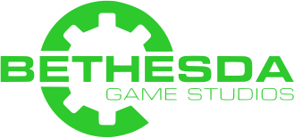

Le site de Vault-Tec à était developpé sur angular 17 par des ingénieurs et developpeurs de la société Vault-Tec*
en partenariat avec
tout les droits de Vault-tec sont reservé a la société
*Suite à des changements communication de Vault-Tec concernant son image de marque sur les nouveaux medias la réalisation du site internet de Vault-Tec à exeptionnelement était confié a une personne externe à la société. Vous trouverez ici toutes les informations à propos de la personne en charge du projet.
Si vous souhaitez avoir des informations sur les abris Vault-Tec ou que vous vous sentez seul au point de parler avec un robot. Vous pouvez écrire à notre service client : FlemmeAutomatic, qui s'engage à vous répondre dans les {{responseDelay}} mois minimum.